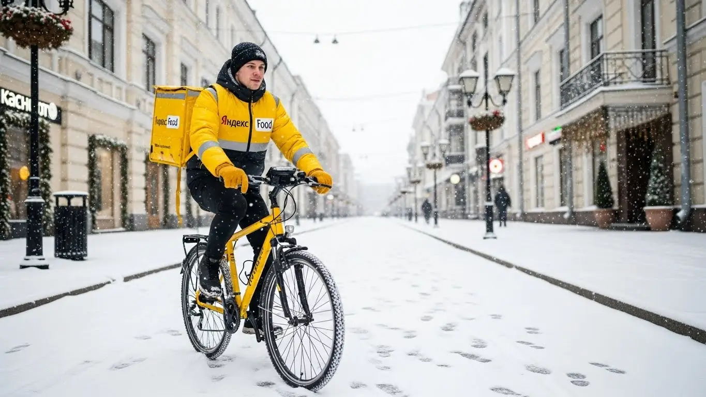

Работа курьером Яндекс Еды в Щербинке: доход, график (2025-2026)

- Работа курьером Яндекс Еды в Щербинке: Честный гайд от своего парня
- Работа курьером Яндекс Еды в Щербинке: для кого эта вакансия и что вы получите
- Сколько вы будете зарабатывать курьером в Щербинке: калькулятор дохода и разбор выплат
- Реальный заработок курьера в Щербинке: смены и месячный доход
- График работы и форматы занятости
- Требования к кандидату и документы
- Самозанятость, налоги и юридическая чистота
- Пошаговое оформление и первый выход на линию в Щербинке
- Пешком, на вело или на авто: что выгоднее в Щербинке
- Районы, маршруты и «топовые» зоны заказов в Щербинке
- Безопасность, страховка, штрафы и оплата простоя
- Плюсы и возможные минусы работы курьером в Щербинке
- Реальные истории и отзывы курьеров из Щербинке
- Короткие ответы на главные вопросы
- Итоги и ваш следующий шаг
Все города
Работа курьером Яндекс Еды в Щербинке: Честный гайд от своего парня
Думаешь, работа курьером Яндекс Еды в Щербинке – это легкие деньги и полная свобода? Боишься, что машина «убьётся» на наших дорогах, или что застрянешь в пробках на Остафьевском шоссе, а потом ещё и штраф прилетит? Забудь про рекламную шелуху. Здесь я, Алексей, расскажу тебе всю правду о том, как реально обстоят дела с доставкой еды именно в Щербинке в 2025-2026 году.
Многие новички приходят в Яндекс Еду, думая, что всё просто. Но без понимания местной «кухни» – где в Щербинке самые «рыбные» районы, как объехать утренние пробки на улице Железнодорожной или где лучше парковаться у новостроек – можно быстро разочароваться. Расходы на бензин или ремонт велосипеда, налоги, система приоритета и штрафы – всё это съедает твой доход, если ты не знаешь, как работать эффективно именно в Щербинке. Большинство теряют деньги и время, потому что не знают этих нюансов и совершают одни и те же ошибки, которые легко избежать. Если ты живёшь в Щербинке, то подробнее про работу курьером Яндекс Еда в Щербинке, включая актуальный FAQ и форму заявки, можно почитать здесь: работа курьером Яндекс Еда в Щербинке.

Поэтому давай сразу к делу: в этой статье мы разберём работу курьером Яндекс Еды в Щербинке от и до. Выясним, сколько реально можно заработать пешим, вело- или автокурьером, посчитаем чистый доход с учётом всех расходов. Я покажу на примерах, какие районы Щербинки самые выгодные, как погода и сезоны влияют на заказы, расскажу про штрафы и как их избежать, а также честно сравню Яндекс Еду с конкурентами и поделюсь отзывами местных ребят.
Я сам не один год крутил баранку и педали по Щербинке, а сейчас ещё и небольшой таксопарк-партнёр держу. Знаю эту кухню изнутри, без прикрас. Так что, если ты готов узнать, как по-настоящему зарабатывать курьером Яндекс Еды в Щербинке в 2025-2026 году, а не просто кататься за копейки, – давай по порядку, сейчас всё разложу по полочкам.
Прежде чем мы углубимся в детали, предлагаю пройти короткий ликбез по ключевым моментам статьи, чтобы ты сразу понял, что тебя ждёт.
Экспресс-навигация: что ты точно узнаешь о работе курьером в Щербинке
В этой статье ты ТОЧНО узнаешь:
- Как реально рассчитать свой доход курьера в Щербинке за смену и месяц, учитывая все бонусы и расходы?
- Какие районы Щербинки считаются «рыбными» для заказов, и как их найти в приложении «Яндекс Про»?
- Чем отличается работа пешим, вело- и автокурьером в Щербинке, и какой формат выгоднее для разных районов?
- Как оформить самозанятость за 10 минут и сколько налогов придётся платить с дохода?
- За что можно получить штраф или потерять рейтинг, и как Яндекс Еда защищает курьера от простоев и несчастных случаев?
- Как правильно планировать слоты и использовать приложение «Яндекс Про», чтобы не тратить время впустую?
А если тебе некогда читать всю статью — переходи сразу к заключению, где ты найдёшь короткие ответы на все эти вопросы и указания, в каких разделах искать подробности.
А теперь взгляни на общую картину заработка и условий, чтобы иметь представление о возможностях.
Ключевые показатели работы курьером Яндекс Еды в Щербинке
Работа курьером Яндекс Еды в Щербинке: для кого эта вакансия и что вы получите
Кому подойдёт эта работа в Щербинке
Слушай, работа курьером в Яндекс Еде в Щербинке — это не просто способ подзаработать, это реальная возможность для многих найти себе место. Если ты студент, которому нужны деньги на карманные расходы или оплату учёбы, вакансия курьера — отличный вариант. Гибкий график позволяет легко совмещать доставку с парами или сессиями, а ежедневные выплаты дают уверенность в завтрашнем дне.
Эта подработка также идеально подходит тем, кто ищет дополнительный доход после основной занятости или в выходные дни. Неважно, есть ли у тебя опыт работы курьером или нет — Яндекс Еда обучает с нуля. Главное — желание работать и зарабатывать. Многие водители, например, используют эту возможность для увеличения дохода, когда их основная деятельность простаивает или просто нужно закрыть финансовые потребности.
Главные преимущества для жителей районов Микрорайон Щербинка, Остафьево, Бутово Парк
Одно из ключевых преимуществ работы курьером в Щербинке — это возможность работать прямо рядом с домом. Тебе не придётся тратить часы на дорогу через всю Москву, чтобы добраться до «рыбных» мест. Жители Микрорайона Щербинка, например, могут выходить на смены буквально из своего подъезда, обслуживая заказы в своём районе.
То же самое касается и тех, кто живёт в Остафьево или Бутово Парк. Эти районы активно развиваются, здесь много жилых комплексов, кафе и магазинов, а значит, и постоянный поток заказов. Ты можешь выбрать удобную для себя зону в приложении Яндекс Про и работать там, где тебе хорошо знакома каждая улица, что значительно экономит время и силы.
Краткое обещание по доходу и условиям
По своему опыту скажу, что в Щербинке курьер Яндекс Еды может рассчитывать на доход от 2500 до 4000 рублей за смену, если работать активно. При полной занятости, то есть 8-10 часов в день, твой месячный заработок вполне может достигать 70 000 – 90 000 рублей, особенно если ты автокурьер и готов брать заказы по всему району и в соседние пригороды.
Важно, что Яндекс Еда предлагает ежедневные выплаты, что очень удобно для тех, кому деньги нужны здесь и сейчас. Ты сам выбираешь, когда и сколько работать, благодаря свободному графику. И, как я уже говорил, начать можно без опыта — главное, чтобы было желание и смартфон. Для оформления работы курьером обычно требуется статус самозанятого, что позволяет легально получать доход и платить налоги.
Кейс из практики:
Мой знакомый, студент из Щербинки, по имени Олег, живёт в Микрорайоне Щербинка. Он работает пешим курьером по вечерам после пар, примерно 4-5 часов, и по выходным. В среднем за вечернюю смену у него выходит около 2000-2500 рублей, а в выходные, когда спрос выше, он может заработать до 3500 рублей за полный день. За месяц, работая 4-5 дней в неделю, он стабильно получает около 45 000 – 50 000 рублей, что для студента — очень хорошие деньги. Он говорит, что главное — брать слоты в часы пик и не бояться работать в плохую погоду, тогда и коэффициенты выше, и чаевые чаще.
Вывод по разделу:
Работа курьером Яндекс Еды в Щербинке — это отличный вариант для тех, кто ищет гибкий график, стабильный доход и возможность работать рядом с домом. Она подходит студентам, людям без опыта и тем, кому нужна подработка. Чтобы максимально использовать преимущества, выбирай слоты в своём районе и не бойся выходить на линию в пиковые часы.

Сколько вы будете зарабатывать курьером в Щербинке: калькулятор дохода и разбор выплат
Из чего складывается доход курьера
Заработок курьера в Яндекс Еде — это не просто фиксированная ставка, а целая система, которая позволяет тебе влиять на свой доход. Во-первых, ты получаешь оплату за каждый выполненный заказ. К этому добавляется доплата за расстояние, что особенно актуально для Щербинки, где заказы могут быть как в плотной застройке, так и на окраинах.
Кроме того, есть повышающие коэффициенты, которые включаются в часы пик, в плохую погоду или в районах с высоким спросом. Это может значительно увеличить твой заработок. Не забывай про бонусы за выполнение определённого количества заказов или за работу в определённые часы. И, конечно, чаевые — это приятное дополнение, которое полностью остаётся у тебя. Важный момент: Яндекс Еда оплачивает простой, если заказов временно нет, а для автокурьеров возможна компенсация проезда, что снижает твои расходы на топливо.
Как пользоваться калькулятором дохода
Чтобы понять свой потенциальный заработок, тебе пригодится калькулятор дохода. Это простой инструмент: сначала ты выбираешь тип доставки — пеший курьер, велокурьер или автокурьер. Затем указываешь, сколько часов в день ты планируешь работать и сколько дней в неделю.
На выходе калькулятор покажет тебе примерный дневной и месячный доход, исходя из средних показателей для Щербинки. Это не точная цифра, но она даст тебе хорошее представление о том, на что можно рассчитывать. Помни, что реальный заработок зависит от твоей активности, выбранных слотов и даже погоды.
Калькулятор дохода курьера в Щербинке
Сколько часов в день вы планируете работать?
8 часов
Сколько дней в неделю вы будете выходить в смену?
5 дней
Расчёт примерный и основан на усреднённых показателях для Щербинки (400 ₽/час). Реальный заработок зависит от типа курьера, активности, бонусов, коэффициентов и возможных простоев.
Хочешь узнать больше об условиях работы курьером Яндекс Еда в своём городе, посмотреть актуальный FAQ и заполнить анкету? Переходи по ссылке: работа курьером Яндекс Еда в твоём городе
Примеры расчёта для пешего, вело- и авто‑курьера в Щербинке
Давай рассмотрим несколько реальных сценариев для Щербинки. Пеший курьер, работающий 6 часов в день в центральной части Микрорайона Щербинка, где много кафе и жилых домов, может зарабатывать около 2800-3200 рублей в день. Заказы там плотные, расстояния небольшие.
Велокурьер, который активно перемещается между спальными районами, такими как Остафьево и Бутово Парк, работая 8 часов, может выйти на 3500-4000 рублей. Велосипед даёт преимущество в скорости на коротких и средних дистанциях, минуя пробки. Автокурьер, который готов брать заказы по всей Щербинке и даже в соседние пригороды, например, в Подольск или Коммунарку, при полной загрузке в 10 часов, особенно в пиковые часы и в плохую погоду, может заработать 5000-6000 рублей за смену.
Кейс из практики:
Возьмём Алексея, автокурьера из Щербинки. Он работает по 10 часов, 5 дней в неделю. Обычно он начинает с утра, берёт заказы из местных супермаркетов, затем переключается на обеденные доставки из кафе в Микрорайоне Щербинка, а вечером активно работает по дальним заказам в сторону Подольска или Коммунарки, где часто бывают повышенные коэффициенты. В среднем, за день у него выходит 5500 рублей. За месяц, при таком графике, его доход составляет около 110 000 рублей. Он говорит, что главное — не бояться дальних поездок и всегда следить за картой спроса в приложении Яндекс Про.

Сравнение компонентов дохода для разных типов курьеров в Щербинке
| Параметр | Пеший курьер | Велокурьер | Автокурьер |
|---|---|---|---|
| Оплата за заказ | Базовая ставка + доплата за расстояние | Базовая ставка + доплата за расстояние (чуть выше) | Базовая ставка + доплата за расстояние (самая высокая) |
| Повышающие коэффициенты | Активны в центре, в часы пик | Активны в спальных районах, в часы пик | Активны по всему городу и пригородам, в часы пик и плохую погоду |
| Бонусы | За выполнение целей, за работу в определённые часы | За выполнение целей, за работу в определённые часы | За выполнение целей, за работу в определённые часы, за дальние заказы |
| Чаевые | Зависят от клиента и качества сервиса | Зависят от клиента и качества сервиса | Зависят от клиента и качества сервиса |
| Оплата простоя | Да, гарантирована | Да, гарантирована | Да, гарантирована |
| Компенсация проезда/топлива | Нет | Нет | Да, за дальние поездки |
Вывод по разделу:
Твой доход курьера в Щербинке складывается из множества факторов, и ты можешь активно на него влиять. Используй калькулятор для примерной оценки, но помни, что реальные цифры зависят от твоей стратегии. Чтобы зарабатывать больше, выбирай правильный тип транспорта, следи за повышающими коэффициентами и не игнорируй дальние заказы, если ты на авто.
Реальный заработок курьера в Щербинке: смены и месячный доход
Диапазон дохода для подработки и полной занятости
Давай сразу к делу: сколько реально можно заработать, работая курьером в Щербинке? Тут всё зависит от твоего подхода, времени и, конечно, выбранного транспорта. Если ты рассматриваешь подработку, скажем, 2–4 часа в день, то пеший или велокурьер в плотной застройке микрорайона Щербинка может рассчитывать на 1000–2000 ₽ за смену. Это вполне реально, особенно если брать вечерние часы для доставки.
Для автокурьера в Щербинке, который готов охватывать не только сам город, но и соседние районы вроде Южного Бутово или даже Подольска, доход за 2–4 часа будет выше — от 1500 до 3000 ₽. При полной занятости, то есть 8–10 часов в день, цифры, естественно, растут. Пеший или велокурьер в Щербинке может приносить 3000–5000 ₽ в день, а автокурьер — 5000–8000 ₽, особенно если активно использовать пиковые часы и повышающие коэффициенты. В месяц, при полной занятости, это может быть от 70 000 до 150 000 ₽ и выше для автокурьера, работающего в Яндекс Доставке.
| Тип курьера | Подработка (2-4 часа/день) | Полная занятость (8-10 часов/день) |
|---|---|---|
| Пеший курьер | 1000–2000 ₽ | 3000–5000 ₽ |
| Велокурьер | 1200–2500 ₽ | 3500–5500 ₽ |
| Автокурьер | 1500–3000 ₽ | 5000–8000 ₽ |
Кейс из практики: Мой знакомый, автокурьер, работает в Щербинке и окрестностях. В будни он выходит на 4-5 часов вечером, а в выходные — на полный день. За месяц у него выходит около 90 000 рублей чистого дохода, учитывая все расходы на топливо и амортизацию. Он говорит, что главное — не лениться и ловить заказы в пиковые часы, особенно когда на карте «Яндекс Про» «горят» коэффициенты.
Вывод: Реальный заработок курьера в Щербинке напрямую зависит от твоей активности и выбранного транспорта. Автокурьеры имеют самый высокий потенциал дохода за счет возможности брать более дальние и дорогие заказы. Если есть возможность, используй авто, это самый прибыльный формат работы в Щербинке.
Как район, время суток и погода влияют на доход
Чтобы зарабатывать больше, нужно понимать, как работает система. В Щербинке, как и везде, есть свои «рыбные» места и часы. Вечера, особенно с 18:00 до 22:00, и все выходные дни — это золотое время для курьера. В эти периоды спрос на доставку еды и товаров резко возрастает, а значит, Яндекс поднимает повышающие коэффициенты. Заказ, который в обычное время стоил бы 200 рублей, в пик может принести 300–400 рублей.
Погода — твой лучший друг, если ты не боишься трудностей. Дождь, снегопад, сильный мороз или, наоборот, аномальная жара — всё это заставляет людей сидеть дома и заказывать доставку. Курьеров на линии становится меньше, а заказов — больше. В такие дни коэффициенты взлетают до максимума, и чаевые тоже становятся щедрее. Например, в Щербинке, когда идёт сильный снег, заказы из ТЦ «Галерея Щербинка» или из ресторанов на улице Железнодорожной могут быть очень выгодными для курьера Яндекс Еды.
Кейс из практики: Помню, как-то зимой был сильный снегопад. Один из моих парковых курьеров, работая на авто в Щербинке, взял смену с 17:00 до 23:00. Он рассказывал, что за эти 6 часов заработал почти 7000 рублей, потому что повышающие коэффициенты были максимальные, и почти каждый клиент оставлял чаевые. Он просто не выключал приложение «Яндекс Про» и брал все заказы подряд.
Вывод: Пиковые часы, выходные и плохая погода — твои главные союзники в борьбе за высокий доход. В эти периоды всегда растут коэффициенты и чаевые, что позволяет заработать значительно больше. Не бойся непогоды, она приносит деньги.
Советы по увеличению заработка от опытных курьеров
Опытные курьеры знают, как выжать максимум из каждой смены, не перерабатывая при этом до изнеможения. Во-первых, всегда старайся брать слоты в часы пик. Это вечера будней (с 18:00 до 22:00) и выходные дни. Бронируй их заранее через приложение «Яндекс Про», чтобы гарантированно получить выгодные заказы.
Во-вторых, внимательно выбирай зоны. В Щербинке это могут быть районы вокруг МЦД-2 станции Щербинка, где много кафе и офисов, или новые жилые комплексы по улицам Барышевская и Новомосковская, где постоянно высокий спрос на доставку. Следи за картой спроса в приложении — она покажет, где сейчас «горячо». В-третьих, если у тебя есть и велосипед, и автомобиль, комбинируй их. На велосипеде удобно работать в плотной застройке микрорайона Щербинка, где пробки и короткие расстояния. Автомобиль используй для дальних заказов, особенно в плохую погоду или когда нужно быстро перемещаться между Щербинкой и, например, Остафьево. Это позволит увеличить твой заработок.
Кейс из практики: Один из моих велокурьеров в Щербинке, парень по имени Максим, всегда выбирает слоты в районе улицы Железнодорожной и ТЦ «Хамелеон». Он знает все короткие пути и дворы, что позволяет ему быстро выполнять заказы. За 5-часовую смену в выходной день он легко делает 3000-3500 рублей, потому что не тратит время на пробки и всегда в центре событий.
Вывод: Планирование — ключ к высокому заработку. Выбирай пиковые слоты и «горячие» зоны в Щербинке, а также грамотно используй свой транспорт. Не игнорируй карту спроса в «Яндекс Про» и всегда бронируй слоты заранее, чтобы не остаться без выгодных заказов.

График работы и форматы занятости
Подработка после учёбы или основной работы
Гибкий график — это одно из главных преимуществ работы курьером, и в Щербинке это работает отлично. Если ты студент, который учится в Москве, но живёт в Щербинке, или у тебя есть основная работа, ты можешь легко совмещать. Например, студент РУДН, живущий в микрорайоне Щербинка, может выходить на линию 3–4 раза в неделю по вечерам, с 18:00 до 22:00. Он выбирает пешую доставку в своём районе, где много жилых домов и кафе. За эти 4 часа он успевает выполнить 6–8 заказов и заработать около 1500–2000 рублей. За месяц это может быть 20 000–30 000 рублей дополнительного дохода, что делает работу курьером Яндекс Еды отличной подработкой.
Другой пример — человек с основной работой, который хочет подработать по выходным. Он может взять авто и работать по субботам и воскресеньям по 8–10 часов. В Щербинке и соседних районах, таких как Южное Бутово, всегда есть заказы. За один выходной день такой курьер легко зарабатывает 4000–6000 рублей, а за месяц это может принести в семейный бюджет 30 000–50 000 рублей. Главное — это твоя дисциплина и желание работать в удобное для тебя время, получая ежедневные выплаты.
Кейс из практики: Мой знакомый, который работает инженером в Подольске, живёт в Щербинке. Он выходит на автодоставку только по субботам и воскресеньям. За эти два дня он стабильно зарабатывает 8-10 тысяч рублей, покрывая расходы на бензин и принося неплохую прибавку к зарплате. Он говорит, что ему нравится такая «смена обстановки» и возможность самому планировать свой доход.
Вывод: Подработка курьером в Щербинке идеально подходит для студентов и тех, у кого есть основная работа, благодаря полной гибкости графика. Ты сам решаешь, когда и сколько работать, что позволяет легко совмещать доставку с учёбой или другими делами. Начни с нескольких вечерних смен или выходных, чтобы понять, как это работает, и постепенно увеличивай нагрузку.
Полная занятость: как выглядит типичный день курьера
Типичный день курьера на полной занятости в Щербинке начинается рано, но без жёсткой привязки к офису. Многие автокурьеры выходят на линию уже к 9:00–10:00 утра, чтобы поймать первые заказы из кофеен и магазинов. Они выбирают зоны с высокой активностью, например, вокруг Варшавского шоссе или в районе ТЦ «Галерея Щербинка», где сосредоточено много точек выдачи Яндекс Доставки.
Первый пик заказов обычно приходится на обеденное время, с 12:00 до 14:00. В это время активно заказывают еду из ресторанов и кафе. После обеда наступает небольшое затишье, которое можно использовать для перерыва, обеда или выполнения менее срочных заказов. Вечерний пик, с 18:00 до 22:00, является самым прибыльным. Курьеры активно работают в жилых районах Щербинки, таких как микрорайон Щербинка или новые ЖК по улице Новомосковская, где люди заказывают ужин домой.
Кейс из практики: У меня есть курьер, который работает на полной занятости в Щербинке на своём авто. Он начинает в 9:30, делает перерыв с 15:00 до 17:00, а потом работает до 22:00. За день он успевает выполнить 20-25 заказов, охватывая Щербинку и ближние районы. Его средний дневной доход составляет 6000-7000 рублей. Он всегда следит за картой спроса в «Яндекс Про» и старается быть там, где «горит».
Вывод: Полная занятость курьером в Щербинке — это динамичная работа с чёткими пиками спроса, которые нужно использовать максимально эффективно. Планирование дня вокруг обеденного и вечернего пиков позволяет максимизировать доход. Не забывай про перерывы, чтобы не выгореть, и всегда держи приложение «Яндекс Про» открытым, чтобы не пропустить выгодные заказы.
Как планировать слоты и выходы через приложение «Яндекс Про»
Приложение «Яндекс Про» — твой главный инструмент для работы курьером Яндекс Еды. Именно через него ты планируешь свои выходы на линию и выбираешь зоны. В разделе «Слоты» ты увидишь доступные временные интервалы и районы, например, «Щербинка (центр)» или «Щербинка (Остафьево)». Важно бронировать слоты заранее, особенно если хочешь работать в самые прибыльные часы или в конкретном районе.
Не опаздывай на забронированные слоты. Если ты забронировал смену на 18:00, будь готов начать работу ровно в это время. Опоздания или частые отмены могут негативно сказаться на твоём рейтинге и приоритете при распределении заказов. А высокий рейтинг — это стабильный доход и доступ к лучшим заказам. Приложение также показывает карту спроса, где цветом выделены зоны с повышенной активностью. Используй эту информацию, чтобы перемещаться туда, где больше всего заказов и выше коэффициенты.
Кейс из практики: Один новичок в моём парке, когда только начинал работать курьером в Щербинке, часто опаздывал на слоты или вообще их пропускал. В итоге, у него упал рейтинг, и он стал получать меньше заказов. Пришлось объяснять ему, что дисциплина в планировании слотов — это основа стабильного заработка. После того как он начал приходить вовремя, его доход быстро вырос.
Вывод: Приложение «Яндекс Про» даёт тебе полную свободу в планировании, но требует ответственности. Бронируй слоты заранее, приходи вовремя и используй карту спроса для выбора выгодных зон в Щербинке. Относись к планированию слотов серьёзно, это напрямую влияет на твой рейтинг и, как следствие, на твой заработок.
Требования к кандидату и документы
Чтобы начать работать курьером в Яндекс Еде, не нужно иметь за плечами большой опыт или специальные навыки. Сервис старается сделать порог входа максимально низким, чтобы каждый, кто хочет зарабатывать, мог это сделать без опыта. Главное — соответствовать базовым требованиям и подготовить необходимые документы. Это поможет избежать лишних вопросов и быстро выйти на линию.
По моему опыту, многие новички переживают из-за формальностей, но на деле всё гораздо проще, чем кажется. Условия работы курьером Яндекс вполне адекватные и выполнимые. Важно понимать, что есть небольшие различия для пеших, вело- и автокурьеров, особенно в части возраста и физической подготовки.
Возраст, гражданство и базовые условия
Для работы курьером в Яндекс Еде есть определённые требования по возрасту и гражданству. Если ты планируешь быть пешим или велокурьером, то начать можно уже с 16 лет. Это отличная возможность для студентов или школьников старших классов, которые хотят подработать в Щербинке. Однако, если тебе нет 18, потребуется письменное согласие родителей или законных представителей, а также будут действовать ограничения по продолжительности рабочего дня согласно Трудовому кодексу РФ. Ночные смены для несовершеннолетних исключены.
Для автокурьеров (или водителей-курьеров) минимальный возраст — 18 лет. Это связано с необходимостью иметь водительское удостоверение и управлять транспортным средством. Что касается гражданства, то работать могут граждане РФ или стран ЕАЭС (Беларусь, Казахстан, Армения, Кыргызстан). Важно иметь действующие документы.
Общие требования к здоровью и физической форме просты: ты должен быть в состоянии переносить небольшие грузы (термосумка или термокороб с заказами) и активно передвигаться по городу. Для пеших и велокурьеров это означает готовность к длительным прогулкам или поездкам, а для автокурьеров — к вождению в разных условиях. Например, в Щербинке много частного сектора и новостроек, где пешим курьерам приходится много ходить, а автокурьерам — маневрировать по узким улочкам.
| Параметр | Пеший курьер | Велокурьер | Автокурьер |
|---|---|---|---|
| Минимальный возраст | 16 лет (с согласия родителей) | 16 лет (с согласия родителей) | 18 лет |
| Гражданство | РФ или ЕАЭС | РФ или ЕАЭС | РФ или ЕАЭС |
| Физическая форма | Хорошая, готовность к длительным прогулкам | Хорошая, готовность к активным поездкам | Удовлетворительная, готовность к вождению |
| Дополнительно | Смартфон на Android | Смартфон на Android, велосипед | Смартфон на Android, водительское удостоверение, личный автомобиль |
Например, у меня был случай с молодым парнем из Щербинки, который учился в Школе №2117. Ему было 17, и он хотел заработать на новый компьютер. Оформил согласие родителей, стал пешим курьером. Выходил на смены по 3-4 часа после уроков в районе улицы Железнодорожной, где много жилых домов и кафе. Зарабатывал стабильно, хватало на свои нужды и даже откладывал. Главное, что он был активным и ответственным.
Итак, требования к курьерам в Яндекс Еде достаточно лояльные, особенно по возрасту для пеших и велокурьеров. Главное – иметь необходимые документы и быть готовым к физической активности. Заранее подготовь их и проверь, подходит ли твой возраст под выбранный формат доставки, чтобы не терять время на оформление.
Какие документы нужны для работы курьером
Для того чтобы начать работу курьером Яндекс Еды, тебе понадобится стандартный набор документов. Ничего сверхъестественного, всё, что обычно есть у каждого гражданина. Во-первых, это, конечно, паспорт гражданина РФ или документ, подтверждающий гражданство одной из стран ЕАЭС. Он нужен для идентификации личности и подтверждения права на работу.
Во-вторых, потребуется ИНН (индивидуальный номер налогоплательщика). Этот документ необходим для оформления самозанятости и корректной уплаты налогов. Если у тебя его нет, его можно быстро получить в любой налоговой инспекции или даже онлайн через портал Госуслуг. В-третьих, нужна банковская карта, на которую будут приходить ежедневные выплаты. Убедись, что карта оформлена на твоё имя. Иногда может потребоваться СНИЛС, но чаще всего достаточно паспорта и ИНН.
Отдельно стоит упомянуть медицинскую книжку. Она нужна не всем курьерам, а только тем, кто работает с продуктами питания из ресторанов и кафе, то есть доставляет еду. Если ты планируешь работать только с доставкой товаров из Яндекс Маркета или Яндекс Лавки, медкнижка, как правило, не требуется.
Если же она нужна, её можно оформить в любой поликлинике или частном медицинском центре. Это займёт некоторое время и потребует небольших вложений, но это обязательное условие для работы с едой. Подготовь все эти документы заранее, чтобы процесс оформления через приложение Яндекс Про прошел быстро и без задержек.

Можно ли работать с 16 лет и какие есть альтернативы
Да, как я уже говорил, работать пешим или велокурьером в Яндекс Еде можно с 16 лет. Это отличная возможность для подростков получить первый трудовой опыт и заработать свои деньги. Однако есть важные нюансы. Во-первых, обязательно нужно письменное согласие родителей или законных представителей. Без него тебя просто не допустят к работе. Во-вторых, для несовершеннолетних действуют ограничения по рабочему времени: не более 4 часов в день в учебное время и не более 7 часов в дни каникул. Ночные смены и работа в праздники запрещены.
Если тебе ещё нет 16 или ты не хочешь работать курьером, есть и другие варианты подработки для подростков в Щербинке и окрестностях. Например, можно попробовать себя в качестве промоутера, раздавая листовки у ТЦ «Щербинка Плаза» или на улице Авиаторов. Также популярны вакансии помощников в магазинах, аниматоров на детских праздниках или выгульщиков собак. Эти варианты тоже позволяют заработать, но могут быть менее гибкими по графику, чем работа курьером.
Важно понимать, что Яндекс Еда предлагает гибкий график и возможность совмещать работу с учёбой, что для подростков часто является ключевым фактором. Если ты готов к физической активности и хочешь зарабатывать, работа курьером — это вполне реальный и доступный вариант.
Самозанятость, налоги и юридическая чистота
Многие, кто только задумывается о работе курьером, переживают по поводу «официальности» и налогов. Это нормальные вопросы, ведь никто не хочет проблем с законом. Сразу скажу: работа в Яндекс Еде абсолютно легальна и прозрачна. Основной формат сотрудничества, который предлагает Яндекс, — это самозанятость. Не пугайся этого слова, это намного проще, чем кажется, и очень выгодно.
Я сам, как владелец таксопарка, вижу, как много людей переходят на самозанятость, потому что это удобно и позволяет работать на себя, не заморачиваясь со сложной бухгалтерией. В Щербинке, как и по всей стране, этот формат активно развивается, и государство его всячески поддерживает.
Почему курьеры Яндекс Еды работают как самозанятые
Формат самозанятости, или как его ещё называют, налог на профессиональный доход (НПД), был создан специально для людей, которые работают на себя, оказывая услуги или продавая товары собственного производства. Для курьеров Яндекс Еды это идеальный вариант. Во-первых, ты получаешь официальный доход. Это значит, что твой заработок полностью легален, и ты можешь подтвердить его при необходимости, например, для получения кредита.
Во-вторых, самозанятость исключает сложную бухгалтерию. Тебе не нужно нанимать бухгалтера или разбираться в дебрях налогового законодательства. Вся отчётность максимально упрощена и ведётся через специальное приложение «Мой налог». Ты просто фиксируешь свои доходы, а приложение само рассчитывает сумму налога. Это очень удобно и снимает головную боль с бумажной волокитой. В итоге, сотрудничая как самозанятый, ты получаешь полную юридическую чистоту и легальность своей деятельности, что гораздо безопаснее, чем работать «всерую».
Как за 10 минут оформить самозанятость через «Мой налог»
Оформить самозанятость — дело буквально 10-15 минут, и это можно сделать прямо со смартфона. Тебе понадобится только паспорт и доступ в интернет. Вот пошаговая схема:
- Скачай приложение «Мой налог» на свой смартфон (доступно для Android и iOS).
- Зарегистрируйся. Можно сделать это по паспорту (приложение отсканирует его и распознает данные) или через личный кабинет налогоплательщика/Госуслуги.
- Подтверди данные. После сканирования паспорта или ввода данных, система предложит подтвердить информацию.
- Выбери вид деятельности. Укажи «Услуги по доставке» или «Курьерские услуги».
- Готово! Ты официально самозанятый.
Весь процесс интуитивно понятен и не требует специальных знаний. Никаких поездок в налоговую, очередей или заполнения кипы бумаг. Это действительно быстро и удобно, что особенно ценно для тех, кто хочет начать зарабатывать как можно скорее в Щербинке.
Сколько и как платить налоги
Налоговая ставка для самозанятых курьеров очень привлекательная. Если ты работаешь с физическими лицами (то есть доставляешь заказы клиентам), ставка составляет всего 4% от дохода. Если же ты оказываешь услуги юридическим лицам (например, Яндекс Еде), ставка будет 6%. В случае с Яндекс Едой, ты будешь платить 6%, так как сервис является юридическим лицом.
Самое приятное, что тебе не нужно ничего считать вручную. Приложение «Мой налог» автоматически формирует чеки после каждого поступления денег и рассчитывает сумму налога. Раз в месяц (обычно до 12 числа следующего месяца) тебе приходит уведомление с суммой налога к уплате. Оплатить его можно прямо в приложении банковской картой. Это гораздо проще и безопаснее, чем трудиться неофициально или получать «серые» деньги, рискуя штрафами и проблемами с законом. Твой доход будет полностью легальным, а ты — защищённым.
Возьмём пример Олега, автокурьера из Щербинки. Он работает на своей машине, доставляет заказы по Южному Бутово и Подольску. За месяц его доход составил 75 000 рублей. Как самозанятый, он заплатил 6% налога, что составило 4500 рублей. Эти деньги автоматически списались через приложение «Мой налог». Олег говорит, что это намного удобнее и спокойнее, чем раньше, когда он трудился «в тени» и постоянно переживал.
Вывод: Самозанятость — это удобный и легальный способ работы для курьеров Яндекс Еды, который обеспечивает прозрачность доходов и минимальные налоговые отчисления. Оформление занимает считанные минуты, а все операции по налогам автоматизированы. Не бойся самозанятости, это твой официальный статус и гарантия защиты. Лучше сразу оформить все по закону, чем потом иметь проблемы с налоговой.
Пошаговое оформление и первый выход на линию в Щербинке
Начать работу курьером в Яндекс Еде в Щербинке проще, чем кажется. Многие думают, что это сложный и долгий процесс, но на самом деле от заполнения анкеты до первого заказа может пройти всего пара дней, а то и меньше. Главное — следовать инструкциям и не бояться задавать вопросы, если что-то непонятно. Это отличная возможность для тех, кто ищет подработку или хочет стать курьером без опыта.
Далее мы подробно разберем каждый шаг, чтобы ты точно знал, что делать. Весь процесс максимально автоматизирован и сделан так, чтобы любой человек, даже без опыта, мог быстро влиться в работу. Это не бюрократическая волокита, а вполне понятная последовательность действий, которая приведет тебя к первому доходу.
Шаг 1–2: анкета и онлайн‑обучение
Первое, с чего ты начнешь свой путь как курьер Яндекс Еды, — это заполнение анкеты на сайте или через приложение. Там нужно будет указать базовые данные: ФИО, номер телефона, электронную почту, гражданство и возраст. Не переживай, это стандартная процедура, которая занимает всего несколько минут. После отправки анкеты твои данные пройдут быструю проверку, что является частью условий работы.
Далее тебя ждет короткое онлайн-обучение. Это не скучные лекции, а интерактивные материалы, которые познакомят тебя с сервисом Яндекс Еды, покажут, как работает приложение Яндекс Про, и объяснят основные правила безопасности. Будут небольшие тесты, чтобы убедиться, что ты усвоил информацию. Например, как правильно общаться с клиентами, что делать в случае форс-мажора или как безопасно передвигаться по улицам Щербинки. Это важный этап, который помогает избежать ошибок на старте работы курьером.
Шаг 3: получение сумки и доступа к заказам в Щербинке
После успешного прохождения обучения и проверки данных тебе нужно будет получить брендированную термосумку и фирменную экипировку. Это обязательное условие для работы курьером Яндекс Еды, ведь именно термокороб помогает сохранять температуру заказа, будь то горячая пицца или холодный напиток. В Щербинке получить экипировку можно несколькими способами.
Обычно это происходит через официальных партнёров сервиса или в специальных пунктах выдачи, адреса которых ты найдешь прямо в приложении Яндекс Про. Иногда есть возможность заказать доставку термосумки на дом, что очень удобно. Как только ты получишь экипировку, тебе откроется полный доступ к заказам в приложении, и ты сможешь начать планировать свои первые смены в Щербинке как курьер.
Шаг 4: первый слот и первый доход
Теперь, когда все формальности позади, можно выбирать свой первый слот (рабочую смену) и выходить на линию. В приложении Яндекс Про ты увидишь доступные слоты и зоны повышенного спроса в Щербинке. Выбирай удобное время и знакомый район, например, вокруг станции МЦД-2 Щербинка или в районе улиц Новомосковская и Железнодорожная, где много жилых домов и кафе. Так ты сможешь эффективно планировать свою работу курьером.
Как только ты выйдешь на линию, приложение начнет предлагать тебе заказы. Не бойся, если сначала будет немного непривычно – это нормально. С каждым выполненным заказом ты будешь чувствовать себя увереннее, а твой баланс будет пополняться. Многие курьеры начинают зарабатывать уже в тот же день или на следующий после оформления, ведь Яндекс Еда предлагает ежедневные выплаты, так что твой первый доход не заставит себя долго ждать.
Кейс из практики:
Мой знакомый, студент из Щербинки, решил попробовать себя в Яндекс Еде. Он заполнил анкету вечером в понедельник, во вторник утром прошел онлайн-обучение, а уже к обеду забрал термокороб в пункте выдачи на улице Спортивной. Вечером того же дня он взял свой первый слот на 3 часа в районе Бутово Парк и заработал около 1200 рублей, доставляя заказы из местных кафе. Он был приятно удивлен, как быстро удалось начать работу курьером.
Вывод по разделу:
Процесс оформления в Яндекс Еду максимально упрощен и занимает минимум времени, позволяя быстро перейти от регистрации к реальным заказам. Это отличная возможность начать работу курьером без опыта. Главное — внимательно пройти обучение и получить экипировку, чтобы быть готовым к работе. Начать зарабатывать можно практически сразу, выбрав удобный слот в знакомом районе Щербинки. Мой совет: не откладывай, если есть желание попробовать, ведь первый шаг — самый важный для твоего дохода.
Пешком, на вело или на авто: что выгоднее в Щербинке
Выбор транспорта для работы курьером в Яндекс Еде — это ключевой момент, который напрямую влияет на твой доход и комфорт. В Щербинке, как и в любом другом городе, есть свои особенности, которые делают один вид доставки более выгодным, чем другой. Важно понимать, что универсального ответа нет, и лучший вариант зависит от твоих возможностей, физической подготовки и даже от того, в каком районе ты планируешь работать.
Давай разберем каждый формат, чтобы ты мог принять взвешенное решение. Я сам начинал с пеших доставок, потом пересел на велосипед, а теперь в основном работаю на машине, так что знаю все нюансы изнутри. Понимание этих тонкостей поможет тебе оптимизировать свою работу курьером и получать высокий доход.
Пеший курьер: для центра и плотной застройки в Щербинке
Пешая доставка в Щербинке идеально подходит для районов с плотной застройкой и большим количеством пешеходных зон, где на машине или велосипеде передвигаться сложно или долго из-за пробок и ограниченных парковок. Например, это может быть старая часть Щербинки вокруг станции МЦД-2, улицы Новомосковская и Железнодорожная, где много магазинов, кафе и жилых домов расположены близко друг к другу. Здесь пеший курьер может быть максимально эффективен.
Здесь ты не тратишься на бензин или обслуживание транспорта, а заказы обычно короткие, что позволяет выполнять их быстро и брать больше за смену. Это отличный вариант для тех, кто любит ходить, хочет совместить работу с физической активностью и не имеет собственного транспорта, ищет подработку без опыта. Однако, будь готов к тому, что придется много двигаться, особенно с тяжелыми заказами.
Велокурьер: быстрые доставки между спальными районами
Велосипед — это золотая середина для курьера в Щербинке. Он дает отличную скорость и маневренность, позволяя объезжать пробки, что особенно актуально на таких загруженных участках, как Варшавское шоссе. Велокурьеры могут эффективно работать между спальными районами, например, между Бутово Парк и Остафьево, где расстояния уже приличные для пешей доставки, но еще не критичные для велосипеда. Это идеальный формат для работы курьером на велосипеде.
Кроме того, работа велокурьером — это отличный способ поддерживать физическую форму, получая за это деньги. Ты экономишь на топливе, а твои доставки становятся быстрее, что увеличивает количество выполненных заказов и, соответственно, твой доход. Главное — иметь исправный велосипед и быть готовым к работе в любую погоду, ведь клиенты Яндекс Еды ждут еду и в дождь, и в снег.
Водитель‑курьер: заказы по всему городу и пригороду Подольск и Коммунарка
Для водителя-курьера в Щербинке открываются самые широкие возможности. На своем авто ты можешь брать дальние заказы, которые недоступны пешим или велокурьерам, и доставлять их по всему городу и в ближайшие пригороды, такие как Подольск или Коммунарка. Это особенно выгодно в часы пик, когда пробки на дорогах увеличивают стоимость заказа, или в плохую погоду, когда спрос на доставку резко возрастает.
Автомобиль обеспечивает комфорт и позволяет брать крупные, тяжелые заказы, например, из супермаркетов или ресторанов с большим объемом. Конечно, здесь есть расходы на топливо и обслуживание машины, но при правильном планировании маршрутов и выборе выгодных слотов, доход водителя-курьера часто оказывается самым высоким, обеспечивая стабильный заработок.
| Тип курьера | Преимущества в Щербинке | Оптимальные районы | Потенциальный доход (условно) | Требования к транспорту |
|---|---|---|---|---|
| Пеший курьер | Не нужны расходы на транспорт, обход пробок, оплачиваемый фитнес | Район станции Щербинка, улицы Новомосковская, Железнодорожная (плотная застройка) | Средний | Удобная обувь, смартфон, термокороб |
| Велокурьер | Высокая скорость, маневренность, обход пробок, экономия на топливе | Между Бутово Парк и Остафьево, районы с хорошими велодорожками | Выше среднего | Исправный велосипед, смартфон, термокороб |
| Водитель-курьер | Дальние заказы, комфорт, доставка крупных заказов, работа в любую погоду | По всему городу Щербинка и в пригороды (Подольск, Коммунарка) | Высокий | Личный автомобиль, смартфон, термокороб |
Кейс из практики:
Водитель-курьер Сергей из Щербинки предпочитает работать на своем авто. Он часто берет вечерние слоты, когда спрос на доставку в Подольск или Коммунарку возрастает. За 6-часовую смену в пятницу вечером он может выполнить 8-10 заказов, включая несколько дальних, и заработать до 4000-5000 рублей, даже с учетом расходов на бензин. В плохую погоду его доход еще выше, так как коэффициенты растут, обеспечивая стабильный заработок.
Вывод по разделу:
Выбор транспорта для работы курьером в Яндекс Еде в Щербинке напрямую зависит от твоих предпочтений и района работы. Пешие курьеры отлично себя чувствуют в плотной застройке, велокурьеры — на средних дистанциях между спальными районами, а автокурьеры — по всему городу и в пригородах. Мой совет: оцени свои возможности и выбери тот формат, который позволит тебе максимально эффективно использовать особенности Щербинки для получения стабильного дохода и высокого заработка.

Районы, маршруты и «топовые» зоны заказов в Щербинке
Когда ты начинаешь работать курьером в Яндекс Еде или Яндекс Доставке, важно понимать, где именно в Щербинке можно заработать больше всего. Это не просто удача, а грамотное планирование и знание специфики города. Опытный курьер всегда держит в голове карту спроса и выбирает районы, где заказы идут потоком, а повышающие коэффициенты радуют глаз. В Щербинке, как и везде, есть свои «рыбные» места, и твоя задача — научиться их находить и использовать.
Понимание специфики районов Щербинки поможет тебе не только увеличить доход, но и сэкономить время и силы. Например, пешему курьеру нет смысла ехать на окраину, где большие расстояния между домами, а автокурьеру, наоборот, выгодно брать дальние заказы, которые пешим или велокурьерам не под силу. В этом разделе я расскажу, как ориентироваться в городе и выбирать самые прибыльные маршруты, чтобы работа курьером в Яндекс Еде приносила максимальный доход и была максимально эффективной.
Где больше всего заказов: ТРЦ, бизнес‑центры и туристические места
В Щербинке, как и везде, самые активные зоны для работы курьером — это места скопления людей и торговых точек. В первую очередь, это крупные торговые центры, такие как «Галерея Щербинка» на улице Железнодорожная или «Бутово Молл», который хоть и находится в Бутово, но генерирует много заказов для курьеров Яндекс Еды и Яндекс Доставки, работающих на стыке районов. Здесь всегда много ресторанов, кафе и магазинов, а значит, и постоянный поток заказов.
Помимо ТРЦ, стоит обращать внимание на деловые кварталы, где расположены офисные здания. В Щербинке это могут быть зоны вокруг промышленных предприятий или административных центров, где сотрудники регулярно заказывают обеды и кофе. Хотя Щербинка не является крупным туристическим центром, в выходные дни и праздники спрос может расти в парковых зонах или местах отдыха, куда люди заказывают еду для пикников. В такие моменты Яндекс Про часто показывает повышенные коэффициенты, что позволяет хорошо заработать и увеличить свой доход.
Работа в своём районе: примеры для популярных жилых кварталов
Многие курьеры предпочитают работать рядом с домом, и в Щербинке это вполне реально. Например, в густонаселенных жилых кварталах, таких как Остафьево, Новомосковский или даже прилегающие к Щербинке части Южного Бутово, достаточно кафе, ресторанов и продуктовых магазинов, которые активно используют доставку. Это позволяет брать заказы, не тратя много времени на дорогу до стартовой точки, что удобно для подработки со свободным графиком.
Работая в своём районе, ты лучше знаешь местность, короткие пути и особенности домов, что значительно ускоряет доставку и повышает твой рейтинг. Например, в Остафьево много новостроек с большим количеством жителей, которые регулярно заказывают еду из местных пиццерий, суши-баров и сетевых магазинов через Яндекс Еду. Это идеальный вариант для пеших и велокурьеров, которые могут быстро перемещаться между домами.
Как выбирать зоны и слоты в «Яндекс Про», чтобы не мотаться впустую
Приложение «Яндекс Про» — твой главный инструмент для планирования работы курьером. На карте спроса ты увидишь «горячие» зоны, подсвеченные разными цветами, где спрос на доставку особенно высок, а значит, и повышающие коэффициенты выше. Твоя задача — выбирать слоты именно в таких зонах и в часы пик, чтобы не мотаться впустую по городу и максимизировать свой заработок.
Планируй маршруты так, чтобы минимизировать холостой пробег. Если ты автокурьер, старайся брать заказы, которые ведут тебя из одной горячей зоны в другую, или возвращают в район с высоким спросом. Для пеших и велокурьеров, работающих с Яндекс Едой, это означает выбор компактных зон с плотной застройкой и большим количеством заведений. Например, если ты работаешь в районе «Галереи Щербинка», старайся брать заказы, которые не уводят тебя слишком далеко от этого ТРЦ, чтобы быстро вернуться за следующим.
| Параметр | ТРЦ и бизнес‑центры | Спальные районы (Остафьево, Новомосковский) |
|---|---|---|
| Плотность заказов | Очень высокая, особенно в обед и вечером | Стабильная, особенно вечером и в выходные |
| Тип курьера | Пеший, вело (внутри ТРЦ), авто (между ТРЦ и офисами) | Пеший, вело (оптимально), авто (для дальних доставок) |
| Повышающие коэффициенты | Часто высокие, особенно в часы пик | Появляются в пиковые часы и при плохой погоде |
| Знание местности | Менее критично, но помогает быстрее ориентироваться | Критично для скорости и эффективности |
Вывод по разделу: Работа курьером в Щербинке может быть очень прибыльной, если подходить к ней с умом. Чтобы максимизировать свой доход, всегда анализируй карту спроса в «Яндекс Про» и выбирай зоны с повышенными коэффициентами. Ориентируйся на ТРЦ и густонаселенные жилые кварталы, а также не забывай про возможность работать в своём районе, что особенно удобно для подработки со свободным графиком. Продуманный подход к каждому выходу на линию обеспечит тебе стабильный заработок и ежедневные выплаты.

Безопасность, страховка, штрафы и оплата простоя
Работа курьером, как и любая другая, имеет свои риски, но в Яндекс Еде ты не остаёшься с ними один на один. Важно знать, какие меры безопасности предусмотрены, что покрывает страховка и за что могут быть штрафы. Понимание этих условий работы курьером Яндекс поможет тебе быть готовым к любой ситуации и защитить свой доход и здоровье.
Я всегда говорю своим ребятам: «Предупрежден — значит вооружен». Понимание этих аспектов поможет тебе чувствовать себя увереннее на линии и избежать неприятных сюрпризов. Мы разберем, как работает бесплатная страховка, какие правила безопасности нужно соблюдать и как избежать штрафов, которые могут повлиять на твой заработок.
Бесплатная страховка на сменах и что она покрывает
Яндекс Еда заботится о своих курьерах, поэтому на каждой смене действует бесплатная страховка жизни и здоровья. Это не просто слова, а реальная защита, которая покрывает несчастные случаи, произошедшие во время выполнения заказов. Такое страхование во время доставок помогает покрыть расходы на лечение, если ты, например, упал с велосипеда или поскользнулся, доставляя заказ.
Лимиты покрытия достаточно серьезные, чтобы курьер не остался один на один с проблемами. Это может быть компенсация за временную нетрудоспособность или даже более серьезные случаи. Главное — сразу сообщить о происшествии в службу поддержки Яндекс Еды через приложение «Яндекс Про». Они подскажут, как действовать дальше и какие документы собрать для оформления страхового случая.
Правила безопасности на дороге и при доставке
Безопасность — это основа работы курьером. Для пеших курьеров важно быть внимательными на переходах, использовать светоотражающие элементы в темное время суток. Велокурьеры (или курьеры на велосипеде) должны всегда носить шлем, проверять исправность тормозов и фар, а также строго соблюдать ПДД. Автокурьеры (или курьеры на автомобиле), конечно, должны быть предельно осторожны за рулем, особенно в плохую погоду.
При доставке заказов тоже есть свои правила. Всегда будь вежлив с клиентами, аккуратно обращайся с заказами, используя, например, термокороб, чтобы ничего не повредить. Если работаешь с наличными, будь внимателен при расчетах. В плохую погоду — дождь, снег, гололед — будь особенно осторожен, не торопись, лучше опоздать на пару минут, чем попасть в неприятную ситуацию.
Какие бывают штрафы и как их избежать
Штрафы в Яндекс Еде — это не система наказаний, а скорее система мотивации к качественной работе курьером. Они применяются за серьезные нарушения, которые напрямую влияют на качество сервиса и удовлетворенность клиентов. Например, грубость по отношению к клиенту, порча заказа из-за неаккуратности или регулярные опоздания без уважительной причины могут привести к понижению рейтинга или штрафам.
Чтобы избежать штрафов, достаточно соблюдать простые правила: быть вежливым, пунктуальным и ответственным. Если ты видишь, что опаздываешь, всегда свяжись с клиентом и поддержкой через Яндекс Про. Если возникла проблема с заказом, не пытайся скрыть ее, а сразу сообщи в поддержку. Честность и оперативное решение проблем всегда ценятся выше, чем попытки скрыть ошибку. Высокий рейтинг курьера — это залог стабильного дохода и отсутствия проблем.
Что такое оплата простоя и как она защищает ваш доход
Оплата простоя — это одно из ключевых преимуществ работы курьером в Яндекс Еде, которое защищает твой доход. Это механизм, при котором тебе начисляются деньги, даже если ты находишься на активной смене, но заказов временно нет, или ты вынужден долго ждать заказ в ресторане. Это гарантирует, что твоё время не будет потрачено впустую, обеспечивая стабильный заработок.
Как это работает? Если ты вышел на слот, а заказов мало, или ресторан задерживает выдачу заказа дольше установленного времени, система автоматически начинает начислять тебе оплату за простой. Это значит, что ты не теряешь деньги из-за внешних факторов, на которые не можешь повлиять. Такой подход выгодно отличает Яндекс Еду от многих других сервисов доставки, где время ожидания или отсутствие заказов просто не оплачивается. Это дает уверенность в стабильном заработке и возможности получать ежедневные выплаты, даже когда спрос временно снижается.
| Аспект | Описание в Яндекс Еде | Как это защищает курьера |
|---|---|---|
| Страховка | Бесплатное страхование жизни и здоровья на сменах | Покрытие расходов на лечение при несчастных случаях во время работы |
| Правила безопасности | Четкие рекомендации для пеших, вело- и автокурьеров | Минимизация рисков ДТП и травм, защита от конфликтных ситуаций |
| Штрафы | Применяются за серьезные нарушения (грубость, порча заказа, опоздания) | Мотивируют к качественной работе, но их легко избежать при соблюдении правил |
| Оплата простоя | Начисление денег за время ожидания заказов или в ресторане | Гарантирует стабильный доход, даже при низком спросе или задержках |
Вывод по разделу: Безопасность и защита дохода — это не пустые слова в Яндекс Еде. Бесплатная страховка, четкие правила и механизм оплаты простоя создают комфортные условия для работы курьером. Соблюдая правила, ты сможешь избежать штрафов и максимально защитить свой заработок. Помни, что твоя безопасность и стабильность — это приоритет, а Яндекс Еда стремится обеспечить надежные условия работы для каждого курьера, в том числе и для самозанятых.
Плюсы и возможные минусы работы курьером в Щербинке
Сильные стороны работы курьером в Щербинке
Начнем с того, что работа курьером в Щербинке, как и в других районах, имеет свои неоспоримые преимущества. Главное из них – это, конечно, гибкий график. Ты сам решаешь, когда и сколько выполнять доставки, что особенно ценно для студентов из того же РГСУ, молодых родителей или тех, кто ищет подработку к основной занятости. Это не офис с девяти до шести, где каждый твой шаг расписан. Для начала такой работы не требуется специального опыта.
Кроме того, Яндекс Еда предлагает ежедневные выплаты, что для многих становится решающим фактором. Деньги приходят на карту быстро, без задержек, и ты можешь сразу ими распоряжаться. Это очень удобно, когда нужны средства на текущие расходы или просто не хочется ждать зарплаты раз в месяц. Плюс ко всему, оформляя самозанятость, ты получаешь официальный доход, что дает тебе уверенность и социальные гарантии. Процесс оформления самозанятости прост, а налог для самозанятых невысок. Регулярные выплаты — одно из ключевых преимуществ.
Кейс из практики: Мой знакомый, Сергей, живет в ЖК Прима-Парк. Он автокурьер и часто берет слоты по вечерам, после основной работы, или в выходные. За 3-4 часа в пик он спокойно делает 1500-2000 рублей, получая приличную прибавку к семейному бюджету. Он ценит, что может работать прямо в своем районе, не тратя время на долгие поездки через весь город. Это отличный пример того, как работа курьером позволяет эффективно использовать личное время и получать хороший доход.
С какими сложностями чаще всего сталкиваются курьеры
Конечно, не бывает работы без минусов, и курьерская деятельность не исключение. Во-первых, это физическая нагрузка. Пешим и велокурьерам приходится много ходить или крутить педали, подниматься по лестницам, особенно если заказ большой или адрес находится в доме без лифта. Автокурьерам Яндекс Доставки тоже не всегда легко — пробки на Варшавском шоссе или в центре Щербинки могут сильно вымотать.
Во-вторых, погода. Зимой в Щербинке бывает снежно и скользко, летом – жарко. Выполнять заказы под дождем или в сильный мороз – испытание, к которому нужно быть готовым. Хотя в плохую погоду и коэффициенты выше, и чаевые чаще дают, но комфорта это не добавляет. Бывают и простои, когда заказов временно мало, но тут выручает оплата простоя, о которой я уже говорил.
И, конечно, общение с разными клиентами. Большинство людей адекватные, но иногда встречаются и те, кто может испортить настроение. Важно сохранять спокойствие и вежливость, а в случае серьезных проблем всегда можно обратиться в службу поддержки через приложение Яндекс Про.
Кейс из практики: Однажды мой велокурьер, Артём, попал под сильный ливень в районе Остафьево. Заказ был большой, и он промок до нитки. Но он не растерялся: доставил заказ, связался с поддержкой, чтобы предупредить о задержке, и получил компенсацию за испорченную еду (упаковка промокла, но еда была цела). Артём потом сказал, что главное — не паниковать и всегда быть на связи. Такие условия работы требуют стрессоустойчивости от каждого курьера.
Кому такая работа подходит, а кому лучше поискать другой формат
Эта работа отлично подойдет тем, кто ценит свободу и гибкость. Если ты студент и ищешь подработку, чтобы совмещать с учебой в РГСУ, или тебе нужны ежедневные выплаты, чтобы покрывать текущие расходы, то это твой вариант. Также это хороший выбор для тех, кто любит движение, не боится физической активности и готов работать на свежем воздухе. Автокурьеры найдут здесь возможность использовать свой автомобиль для заработка, особенно в пиковые часы или для дальних доставок по Новомосковскому округу. Работа курьером Яндекс Еды часто не требует большого опыта, что делает ее доступной для многих.
С другой стороны, если ты предпочитаешь стабильный офисный график, не любишь физический труд или плохо переносишь переменчивую погоду, то, возможно, стоит рассмотреть другие варианты. Работа курьером требует определенной дисциплины и стрессоустойчивости, особенно при общении с клиентами и решении непредвиденных ситуаций. Важно честно оценить свои силы и предпочтения, чтобы потом не разочароваться. Понимание всех требований к курьеру поможет избежать трудностей.
Кейс из практики: Моя племянница, Лена, попробовала работать пешим курьером в Щербинке. Она думала, что это будет легко, но быстро поняла, что ей не хватает выносливости для долгих смен и тяжелых сумок. В итоге она перешла на удаленную работу, где ей комфортнее. А вот ее одногруппник, наоборот, втянулся и теперь активно выполняет доставки на велосипеде, говорит, что это отличный фитнес и заработок.
Вывод по разделу: Работа курьером в Щербинке предлагает отличные возможности для гибкого заработка и быстрого получения денег, особенно для активных и самостоятельных людей. Однако она требует готовности к физическим нагрузкам и работе в разных погодных условиях. Прежде чем начать, трезво оцените свои возможности и предпочтения, чтобы эта работа приносила вам удовольствие и стабильный доход.
Реальные истории и отзывы курьеров из Щербинке
История студента Российского государственного социального университета (РГСУ), который совмещает учёбу и доставку
Привет! Меня зовут Максим, мне 20 лет, и я учусь на третьем курсе РГСУ. Живу в Щербинке, в районе улицы Барышевская. Я пеший курьер в Яндекс Еде уже почти год. Для меня это идеальный вариант подработки, потому что я могу сам планировать свой день через приложение Яндекс Про. Обычно беру слоты по 3-4 часа вечером, после пар, или на выходных, когда нет учебы.
В среднем за неделю у меня выходит около 8-10 тысяч рублей, если выполнять доставки 4-5 дней по несколько часов. Этого хватает на карманные расходы, оплату интернета и даже на небольшие развлечения. Самое крутое, что я не привязан к одному месту и могу работать прямо в своем районе, доставляя заказы из местных кафе и магазинов в ЖК Бутовские Аллеи или на улицу Новостроевскую. Мой доход позволяет мне быть независимым, и я доволен такими условиями работы и регулярными выплатами.
Опыт автокурьера, который выходит в пиковые часы
Я, Алексей, уже 42 года, и сам не раз выходил на линию, так что знаю, о чем говорю. Вот, например, мой водитель-курьер, Игорь, 35 лет, живет в Щербинке, в районе улицы Железнодорожная. Он работает на своей машине и выходит на линию в основном в пиковые часы – это обеденное время (с 12 до 14) и вечер (с 18 до 22), а также в плохую погоду. Он часто выполняет доставки для Яндекс Доставки.
Игорь предпочитает брать заказы по всему Новомосковскому округу, часто ездит в Подольск или Климовск, если там есть хорошие коэффициенты. За 5-6 часов в пик он может заработать до 3500-4000 рублей. Его устраивает такой формат, потому что он может совмещать это с другими делами, а машина всегда в работе, не простаивает. Главное, говорит, следить за картой спроса в приложении Яндекс Про и выбирать самые «горячие» зоны. Это позволяет ему максимизировать свой доход, а Яндекс обеспечивает стабильные выплаты.
Мнение пешего или вело‑курьера о работе в центре и спальниках
Меня зовут Катя, мне 24 года, и я велокурьер. Живу в Щербинке, рядом с ТЦ Галерея. Мне нравится работать на велосипеде, потому что это и заработок, и фитнес одновременно. В центре Щербинки, где много магазинов и кафе, заказы идут плотно, но иногда приходится маневрировать между пешеходами. Зато нет проблем с парковкой, как у автокурьеров.
В спальных районах, таких как ЖК Прима-Парк или Бутовские Аллеи, расстояния между домами больше, но и трафик меньше. Заказы там часто бывают из супермаркетов, поэтому сумки тяжелее. К этому пришлось привыкнуть. В целом, мне нравится свобода передвижения и возможность каждый день быть на свежем воздухе. Единственный минус – это, конечно, зима, когда на велосипеде уже не так комфортно, но тогда я перехожу на пешие доставки или беру меньше смен. Мой опыт показывает, что условия работы меняются в зависимости от сезона и района, но Яндекс Еда всегда предлагает возможности для заработка и своевременные выплаты.
Короткие ответы на главные вопросы
Здесь мы собрали краткие ответы на самые частые вопросы, которые возникают у кандидатов. Это своего рода шпаргалка, которая поможет быстро освежить в памяти ключевые моменты.
Быстрая шпаргалка: ответы на ключевые вопросы
Короткие ответы на ключевые вопросы
Как реально рассчитать свой доход курьера в Щербинке за смену и месяц, учитывая все бонусы и расходы?
Твой доход складывается из оплаты за заказ, доплаты за расстояние, повышающих коэффициентов, бонусов и чаевых. В Щербинке пеший курьер может получать 1000–2000 ₽ за 2-4 часа, автокурьер — до 8000 ₽ за полный день. Учитывай расходы на топливо и амортизацию для авто.
→ Подробнее читай в разделе «Сколько вы будете зарабатывать курьером в Щербинке: калькулятор дохода и разбор выплат» и «Реальный заработок курьера в Щербинке: смены и месячный доход».Какие районы Щербинки считаются «рыбными» для заказов, и как их найти в приложении «Яндекс Про»?
Наибольший спрос на заказы в Щербинке наблюдается вокруг крупных ТРЦ («Галерея Щербинка»), деловых кварталов и в густонаселенных жилых районах, таких как Микрорайон Щербинка, Остафьево и Бутово Парк. В приложении «Яндекс Про» эти зоны подсвечиваются на карте спроса.
→ Подробнее читай в разделе «Районы, маршруты и «топовые» зоны заказов в Щербинке».Чем отличается работа пешим, вело- и автокурьером в Щербинке, и какой формат выгоднее для разных районов?
Пешая доставка оптимальна для плотной застройки (центр Щербинки), велокурьеры эффективны между спальными районами (Бутово Парк, Остафьево), а автокурьеры выгодны для дальних заказов по всему городу и пригородам (Подольск, Коммунарка). Автокурьеры имеют самый высокий потенциал дохода.
→ Подробнее читай в разделе «Пешком, на вело или на авто: что выгоднее в Щербинке».Как оформить самозанятость за 10 минут и сколько налогов придётся платить с дохода?
Самозанятость оформляется за 10-15 минут через приложение «Мой налог» по паспорту. Это легальный способ работы с официальным доходом. Налог составляет 6% от дохода, полученного от юридических лиц (Яндекс Еды), и автоматически рассчитывается приложением.
→ Подробнее читай в разделе «Самозанятость, налоги и юридическая чистота».За что можно получить штраф или потерять рейтинг, и как Яндекс Еда защищает курьера от простоев и несчастных случаев?
Штрафы применяются за грубость, порчу заказа, регулярные опоздания. Избежать их можно, соблюдая правила и вежливость. Яндекс Еда защищает курьеров бесплатной страховкой на сменах и оплатой простоя, когда заказов временно нет или приходится долго ждать в ресторане.
→ Подробнее читай в разделе «Безопасность, страховка, штрафы и оплата простоя».Как правильно планировать слоты и использовать приложение «Яндекс Про», чтобы не тратить время впустую?
Бронируй слоты заранее, особенно в часы пик (вечера, выходные) и в «горячих» зонах, которые подсвечены на карте спроса в «Яндекс Про». Приходи на смены вовремя, чтобы поддерживать высокий рейтинг и получать больше выгодных заказов.
→ Подробнее читай в разделе «График работы и форматы занятости» и «Районы, маршруты и «топовые» зоны заказов в Щербинке».
Для полного понимания темы рекомендую прочитать всю статью — там ты найдёшь примеры, сравнения и дельные советы из практики.
Ответы на ключевые вопросы кандидатов
- Нужно ли оформлять самозанятость и как платить налоги?
Да, для работы курьером в Яндекс Еде оформление самозанятости — это обязательное условие. Не переживай, стать самозанятым несложно: регистрация занимает буквально 10 минут через приложение «Мой налог». Весь процесс максимально прозрачен и легален.
Налоги для самозанятых невысокие: всего 6% от дохода, полученного от юридических лиц, к которым относится Яндекс. Приложение «Мой налог» само формирует чеки и рассчитывает сумму к уплате, тебе остаётся только вовремя её внести. Это гораздо проще и безопаснее, чем работать «всерую», и даёт тебе официальный статус, а значит, и уверенность в завтрашнем дне. - Какой телефон и интернет нужны для работы курьером?
Для работы курьером тебе понадобится смартфон на базе Android, обычно версии не ниже 7.0 или 8.0, с поддержкой стабильного GPS. Приложение «Яндекс Про», через которое ты будешь брать заказы и строить маршруты, работает именно на этой операционной системе.
Кроме того, критически важен стабильный мобильный интернет. Без него ты не сможешь получать заказы, строить маршруты и оперативно связываться с клиентами или поддержкой. В Щербинке покрытие обычно хорошее, но всегда имей запасной пакет трафика, чтобы оставаться на связи и выполнять доставки без проблем. - Что будет, если в смену мало заказов — как работает оплата простоя?
Это один из ключевых плюсов работы в Яндекс Еде, особенно в таких городах, как Щербинка, где спрос может быть неравномерным. Если ты вышел на слот, а заказов временно нет, сервис компенсирует тебе время простоя. Это значит, что ты не останешься без денег, даже если пик активности ещё не наступил или уже прошёл.
Механизм простой: пока ты находишься на активном слоте в рабочей зоне, например, в районе Остафьево или у станции Щербинка, и готов принимать заказы, но их нет, тебе начисляется минимальная гарантированная оплата. Такая оплата простоя даёт уверенность в доходе и выгодно отличает Яндекс Еду от многих других сервисов, где простой — это твоя проблема. - Есть ли в Яндекс Еде штрафы и за что их могут применить?
Да, система штрафов в Яндекс Еде существует, но она направлена на поддержание качества сервиса и дисциплины. Штрафы применяются за серьёзные нарушения: грубость по отношению к клиенту или сотрудникам поддержки, порча заказа по твоей вине, регулярные и необоснованные опоздания на слоты или к клиентам.
Однако, если ты работаешь ответственно, вежливо общаешься и следишь за сохранностью заказов, то никаких проблем со штрафами у тебя не возникнет. Большинство спорных ситуаций можно решить через службу поддержки, которая всегда на связи. Главное — соблюдать правила и стандарты сервиса, чтобы работа курьером приносила только положительные эмоции. - Сколько реально можно заработать курьером в Щербинке и чем эта вакансия лучше других сервисов?
В Щербинке реальный заработок курьера Яндекс Еды может варьироваться. При частичной занятости, например, 4 часа в день, можно рассчитывать на 1500–2500 рублей. При полной занятости, работая 8–10 часов, опытные автокурьеры могут зарабатывать до 80 000 – 90 000 рублей в месяц, а пешие или велокурьеры — до 40 000 – 60 000 рублей.
Такая работа курьером выгодно отличается от других сервисов несколькими моментами. Во-первых, это гарантированная оплата простоя, о которой мы уже говорили. Во-вторых, ежедневные выплаты, что очень удобно для планирования бюджета. В-третьих, бесплатное страхование жизни и здоровья на время смены. И, конечно, технологичное приложение «Яндекс Про», которое помогает оптимизировать маршруты и находить самые выгодные заказы в Щербинке, например, в часы пик в районе ТЦ «Галерея». - Можно ли работать без опыта и что будет на обучении?
Абсолютно точно можно работать без опыта! Это одно из главных преимуществ работы курьером в Яндекс Еде. Сервис не требует специального образования или предыдущего стажа. Всё, что тебе нужно знать, расскажут и покажут.
Обучение проходит онлайн, оно короткое и понятное. Тебе объяснят, как пользоваться приложением «Яндекс Про», как правильно принимать и доставлять заказы, как общаться с клиентами и что делать в нестандартных ситуациях. После обучения ты пройдёшь небольшой тест, и можно сразу выходить на линию. Это позволяет начать зарабатывать максимально быстро и стать курьером без лишних сложностей. - Берут ли с 16–17 лет и какие есть ограничения по возрасту?
Да, в Яндекс Еду можно устроиться с 16 лет, но с определёнными условиями. Для пеших и велокурьеров в Щербинке допускается работа с 16 лет при наличии письменного согласия родителей или законных представителей. Важно помнить, что для несовершеннолетних действуют ограничения по Трудовому кодексу РФ: запрещены ночные смены и установлен укороченный рабочий день.
Однако, если ты планируешь работать автокурьером, то здесь требование строгое — только с 18 лет. Это связано с необходимостью иметь водительское удостоверение и быть совершеннолетним для управления транспортным средством. Таким образом, работа курьером доступна для широкого круга соискателей.
Итоги и ваш следующий шаг
Краткие выводы по работе курьером в Щербинке
Итак, работа курьером Яндекс Еды в Щербинке — это реальная возможность для стабильного заработка с гибким графиком. Ты можешь рассчитывать на доход от 1500 рублей за короткую смену до 90 000 рублей в месяц при полной занятости, особенно если ты автокурьер. Условия максимально прозрачны: ты сам выбираешь, когда и сколько работать, а благодаря оплате простоя и страховке чувствуешь себя защищённым.
Яндекс Еда выгодно отличается от конкурентов именно этими гарантиями и технологичностью приложения «Яндекс Про», которое помогает эффективно управлять заказами и маршрутами по Щербинке, будь то доставка в Бутово Парк или в сам город. Это не просто подработка, а полноценный источник дохода с возможностью быстрого старта без опыта. Выбирая работу курьером в Яндекс Еде, ты получаешь все инструменты для успешного начала.
Как сделать первый шаг уже сегодня
Если ты готов начать работу курьером, то первый шаг сделать очень просто и быстро. Не нужно ждать или собирать кучу бумаг, чтобы стать курьером Яндекс Еды.
- Заполни анкету: Это займёт всего несколько минут на сайте. Укажи свои данные, и тебе перезвонят для уточнения деталей.
- Подготовь документы: Паспорт, ИНН, банковская карта. Если тебе 16–17 лет, не забудь про согласие родителей.
- Пройди обучение: Короткий онлайн-курс, который введёт тебя в курс дела и поможет освоиться с приложением «Яндекс Про».
- Выбери первый слот: После обучения ты сможешь выбрать удобное время и район в Щербинке, например, у ТЦ «Хамелеон», и выйти на линию, чтобы получить свои первые заказы и первый доход.
Как видишь, бюрократии минимум. Если подойти к делу с головой, можно стабильно зарабатывать и быстро выйти на желаемый уровень дохода, ведь работа курьером в Яндекс Еде — это удобно и выгодно.